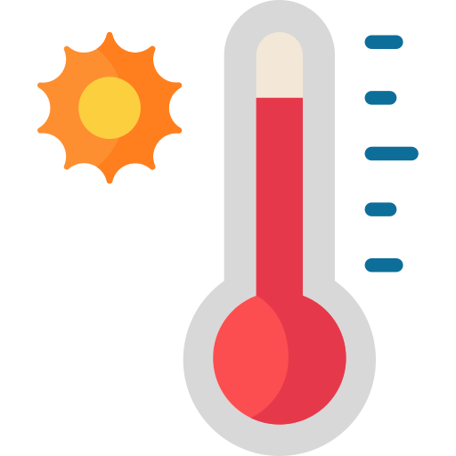
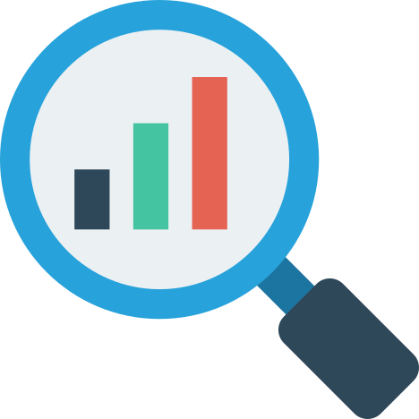

<mat-sidenav-container class="sidenav-container">
  <mat-sidenav #drawer class="sidenav" fixedInViewport
      [attr.role]="(isHandset$ | async) ? 'dialog' : 'navigation'"
      [mode]="(isHandset$ | async) ? 'push' : 'side'"
      [opened]="(isHandset$ | async) === false">
    <mat-toolbar>Menu</mat-toolbar>
    <mat-nav-list>
      <!-- Można tu dodać  [routerLinkActive]='["link-active"]' aby kolorować które jest zaznaczone właśnie-->
      <a mat-list-item (click)="setHeader('Aktualna pogoda')"  [routerLink]="['/']"> <br /> Dane pogodowe  </a>
      <a mat-list-item (click)="setHeader('Analityka')" [routerLink]="['/analytics']"> <br /> Analityka </a>
      <a mat-list-item (click)="setHeader('O autorze')" [routerLink]="['/about']"> O autorze </a>
    </mat-nav-list>
  </mat-sidenav>
  <mat-sidenav-content>
    <mat-toolbar color="primary">
      <button
        type="button"
        aria-label="Toggle sidenav"
        mat-flat-button
        (click)="drawer.toggle()"
        *ngIf="isHandset$ | async">
        <mat-icon aria-label="Side nav toggle icon">menu</mat-icon>
      </button>
      <span> {{header}}</span>
    </mat-toolbar>
    <!-- Add Content Here -->
    <ng-content></ng-content>
  </mat-sidenav-content>
</mat-sidenav-container>
